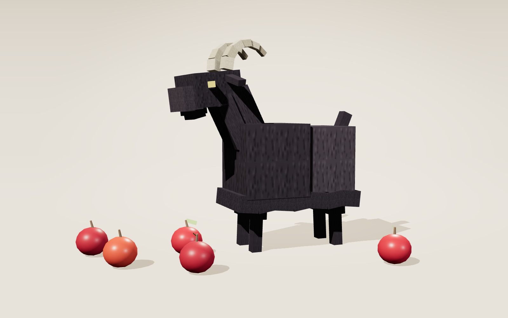
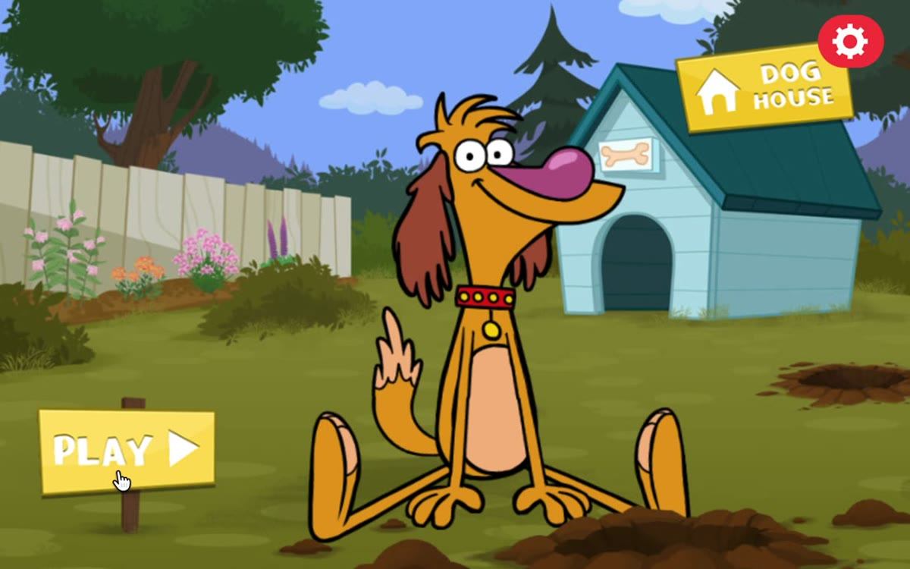
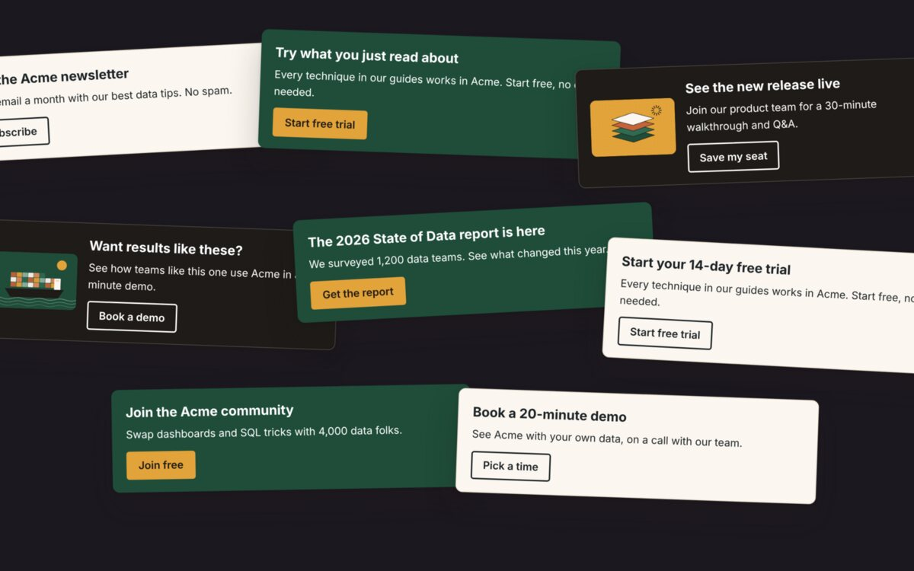
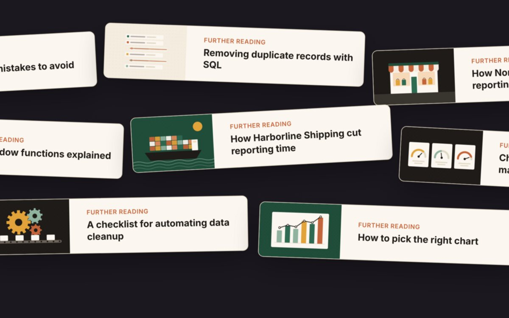
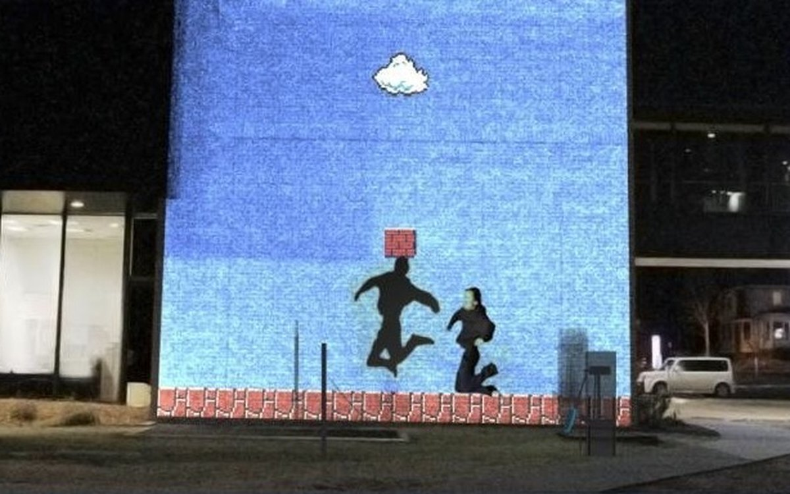

Press Start
A 3D attract-mode title screen for my new site. My first project after a break, inspired by my favorite hero, who took seven years off and came back just fine.
Frontend developer · Boston, MA
I make websites fast, accessible, and a little bit delightful. My path runs from an interactive art degree to HTML5 games for PBS Kids and Sesame Street to senior developer on Mendix's corporate site, where I built a component-based page system for content editors and tuned performance, Core Web Vitals, and accessibility.
Open to remote roles or relocation.

A 3D attract-mode title screen for my new site. My first project after a break, inspired by my favorite hero, who took seven years off and came back just fine.

A fast arcade fossil dig I pitched and programmed. Still live on PBS KIDS, ten years on!

Reusable call-to-action banners with automatic fallbacks, rebuilt as an open-source block plugin.

A “Further reading” card that links to a chosen post, or picks the most related one on its own.
Older work I still love.

An interactive projection for Minneapolis's annual Nuit Blanche. Processing, with a Kinect camera watching for shadows.
CloudKid
Ham in the Fridge
Minneapolis College of Art and Design
Hey! Some of my animation and installation work is still on Vimeo ↗.